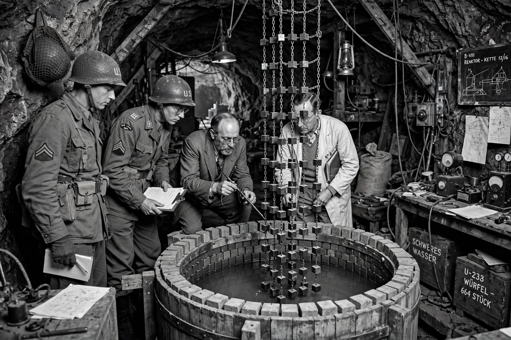

The Alsos Mission was an organised effort by a team of British and United States military officers, scientists, and intelligence agents to discover enemy scientific developments during World War II. Its chief focus was the German nuclear energy project, but it also investigated chemical and biological weapons work and rounded up German scientists for the benefit of the Allies. "Alsos" is Greek for "grove", a play on the name of its sponsor, General Leslie Groves, head of the Manhattan Project, which authorised the mission in 1943.
| Alsos Mission | |
|---|---|
 Alsos personnel at the Haigerloch reactor, April 1945. | |
| Active | 1943–1945 |
| Country | United States, United Kingdom |
| Type | Scientific intelligence mission |
| Commander | Colonel Boris Pash (military); Samuel Goudsmit (scientific chief) |
| Sponsor | Manhattan Project (Gen. Leslie Groves) |
The mission was created after Allied intelligence feared that Germany might be ahead in the race for an atomic bomb. It was headed militarily by Lieutenant-Colonel Boris T. Pash — who had earlier directed security investigations for the Manhattan Project — and scientifically by the Dutch-American physicist Samuel Goudsmit, who was not himself involved in bomb research and so could be risked near the front. Teams followed the advancing Allied armies into Italy (1943–44), France (1944), and Germany (1945), seizing documents, laboratories, and personnel.
In Italy, Alsos officers interrogated Italian scientists and established that German work was not dangerously advanced. In France, the mission entered Paris in August 1944 shortly after its liberation, securing the laboratory of Frédéric Joliot-Curie, and in Strasbourg in November 1944 it captured documents from the university physics institute that gave the first hard evidence of the German programme's organisation and modest scale. In spring 1945, racing to stay ahead of both the French and the Soviets, the mission seized the uranium and heavy-water facilities in the Black Forest region, dismantled the experimental reactor at Haigerloch, and captured leading figures including Otto Hahn, Werner Heisenberg, Carl Friedrich von Weizsäcker, and Walther Gerlach.
Alsos concluded that the German programme had never come close to a weapon: it remained at the stage of reactor research, fragmented between competing groups and starved of resources. Ten of the captured scientists were interned at Farm Hall in England, where their conversations were secretly recorded; the transcripts later became a key source for historians. Goudsmit published a popular account, Alsos, in 1947. The mission was disbanded in October 1945.